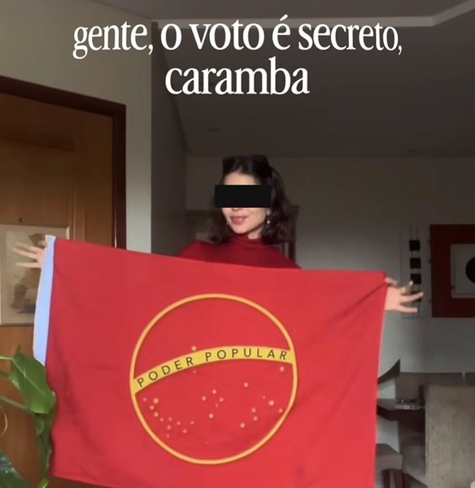
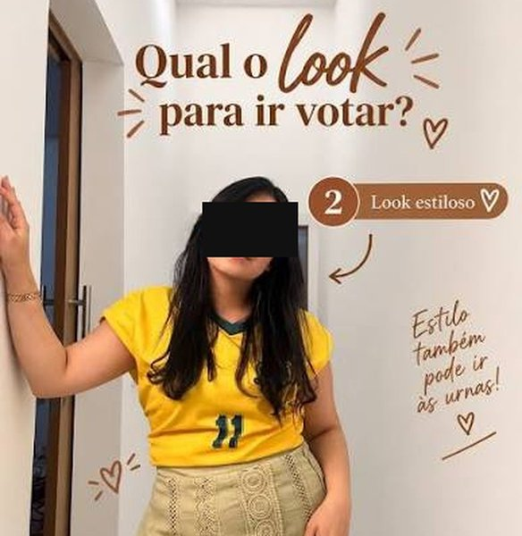

Famoso em cima do muro: o novo crime hediondo
Saiu no Diário do Pará: depois que o segundo turno foi definido, as declarações de voto dos famosos se multiplicaram nas redes. Aí um perfil resolveu fazer a lista dos artistas que continuam “neutros”: Whindersson Nunes, João Gomes, Selton Mello, Gisele Bündchen e Felca, entre outros. A postagem lembrava, com toda a delicadeza, que ninguém é obrigado a declarar voto, mas que o público tem direito de cobrar os ídolos. Tendi. É tipo o assaltante avisando que você não é obrigado a entregar o iPhone.
Meus queridos, reparem na evolução da espécie. Antigamente, artista engajado fazia música de protesto, ia preso e acabava exilado em Londres. Hoje faz story. São quinze segundos, com filtro e legenda em caixa alta. O exílio agora é ficar três dias sem postar.
Teve até ensaio na cabine. Deu no Diário do Nordeste que, no dia 4, celebridades registraram o momento do voto e incentivaram os seguidores a exercer a cidadania. Ou seja, se prepararam para a foto para votar. E a moda pegou dos dois lados:


Eu votei de chinelo e ninguém me fotografou. Ainda bem. A lição que fica é: o voto é secreto, minha senhora. O look, não.
E tem um detalhe que me espantou. Pelas regras do TSE, influenciador pode apoiar candidato à vontade, mas não pode receber dinheiro nem vantagem por isso, e “publi” pedindo voto é proibida. Ou seja, pela primeira vez na história das redes sociais tem famoso produzindo conteúdo de graça. Se isso não é amor à democracia, eu não sei o que é. (Ou é amor ao engajamento, que paga em outra moeda.)
Não me entendam mal. Artista tem todo o direito de declarar voto, para qualquer lado. O que me cansa é a ideia de que o voto do galã vale mais que o seu. Galã é ótimo para indicar bet perfume, restaurante e apresentação com incentivo público no Teatro Santander. Mas, se eu seguisse dica de famoso, já teria um curso de day trade, três panelas que não grudam e um terreno no metaverso. Presidente eu escolho sozinho. Se for para errar, que seja por conta própria.
Aliás, ninguém fez lista cobrando o meu voto. Estou em cima do muro desde 2005. É o único imóvel que eu consegui quitar. Meus únicos partidos continuam sendo o humor, o cinismo e a ironia, e nenhum deles tem fã-clube.
Vote em quem quiser, Juquinha, mas não deixe o story escolher por você. O story some em 24 horas. O presidente fica quatro anos.
o jornalista cansado
P.S.: Este perfil, uma empresa sem vergonha, mas com CNPJ, também postou foto na urna. Teve três curtidas: a vizinha, o síndico e um robô da Indonésia.
Fontes
- Diário do Pará: famosos em cima do muro nas eleições (13 out. 2026)
- Mais Goiás: famosos viram “desaparecidos” por silêncio nas eleições (13 out. 2026)
- Diário do Nordeste: famosos vão às urnas neste domingo (4 out. 2026)
- Jornal de Brasília: TSE define regras para campanha eleitoral nas redes em 2026
- A Tarde: TSE impõe limites a influenciadores nas eleições